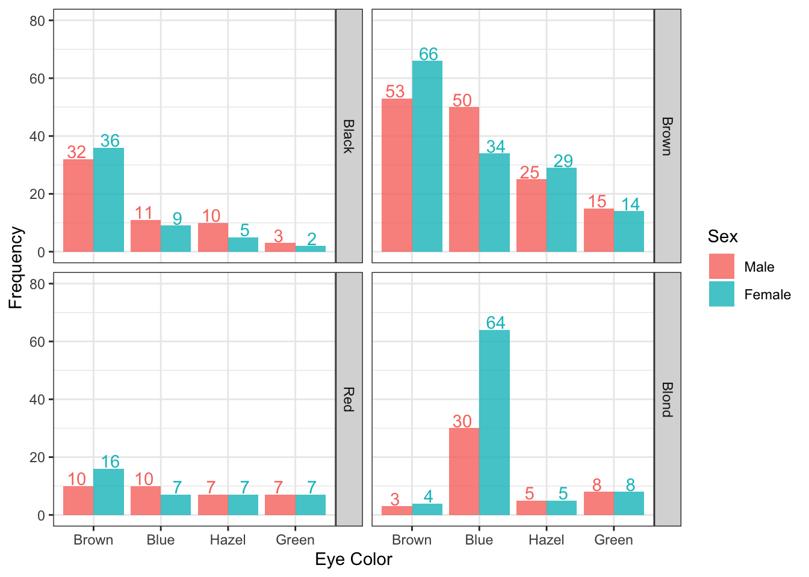
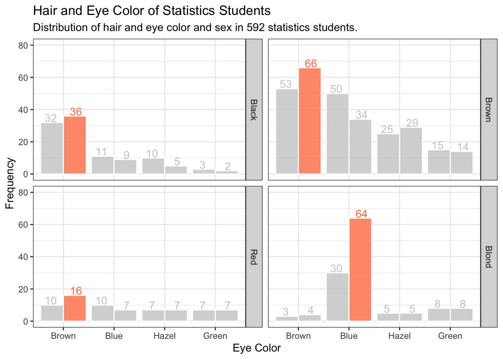
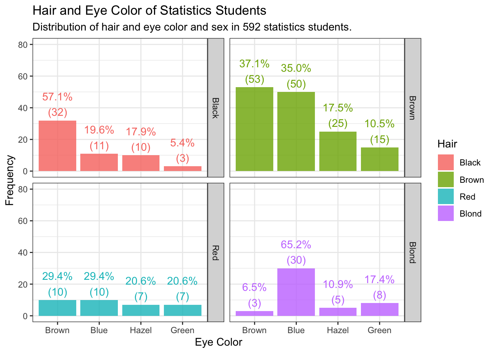

graphics.off()
rm(list = ls())
gc() used (Mb) gc trigger (Mb) limit (Mb) max used (Mb)
Ncells 575453 30.8 1309448 70 NA 669405 35.8
Vcells 1050518 8.1 8388608 64 16384 1851566 14.2In this blog post, we’ll cover how to plot a bar plot with ggplot2. Bar plots are one of the most popular graphs because they can convey meaning simply and intuitively.
graphics.off()
rm(list = ls())
gc() used (Mb) gc trigger (Mb) limit (Mb) max used (Mb)
Ncells 575453 30.8 1309448 70 NA 669405 35.8
Vcells 1050518 8.1 8388608 64 16384 1851566 14.2version _
platform aarch64-apple-darwin20
arch aarch64
os darwin20
system aarch64, darwin20
status
major 4
minor 3.1
year 2023
month 06
day 16
svn rev 84548
language R
version.string R version 4.3.1 (2023-06-16)
nickname Beagle Scouts library(tidyverse)── Attaching core tidyverse packages ──────────────────────── tidyverse 2.0.0 ──
✔ dplyr 1.1.2 ✔ readr 2.1.4
✔ forcats 1.0.0 ✔ stringr 1.5.0
✔ ggplot2 3.4.2 ✔ tibble 3.2.1
✔ lubridate 1.9.2 ✔ tidyr 1.3.0
✔ purrr 1.0.1
── Conflicts ────────────────────────────────────────── tidyverse_conflicts() ──
✖ dplyr::filter() masks stats::filter()
✖ dplyr::lag() masks stats::lag()
ℹ Use the conflicted package (<http://conflicted.r-lib.org/>) to force all conflicts to become errorslibrary(scales)
Attaching package: 'scales'
The following object is masked from 'package:purrr':
discard
The following object is masked from 'package:readr':
col_factorHair and Eye Color of Statistics Students
Distribution of hair and eye color and sex in 592 statistics students.
HairEyeColor
A 3-dimensional array resulting from cross-tabulating 592 observations on 3 variables. The variables and their levels are as follows:
No Name Levels 1 Hair Black, Brown, Red, Blond 2 Eye Brown, Blue, Hazel, Green 3 Sex Male, Female
The Hair x Eye table comes from a survey of students at the University of Delaware reported by Snee (1974). The split by Sex was added by Friendly (1992a) for didactic purposes.
This data set is useful for illustrating various techniques for the analysis of contingency tables, such as the standard chi-squared test or, more generally, log-linear modelling, and graphical methods such as mosaic plots, sieve diagrams or association plots.
head(HairEyeColor), , Sex = Male
Eye
Hair Brown Blue Hazel Green
Black 32 11 10 3
Brown 53 50 25 15
Red 10 10 7 7
Blond 3 30 5 8
, , Sex = Female
Eye
Hair Brown Blue Hazel Green
Black 36 9 5 2
Brown 66 34 29 14
Red 16 7 7 7
Blond 4 64 5 8try to convert table into data frame using as.data.frame.table() or as.data.frame() then store into the df variable
df <- as.data.frame.table(HairEyeColor)
df |> head() Hair Eye Sex Freq
1 Black Brown Male 32
2 Brown Brown Male 53
3 Red Brown Male 10
4 Blond Brown Male 3
5 Black Blue Male 11
6 Brown Blue Male 50df |>
ggplot(aes(x = Eye, y = Freq, fill = Sex, label = Freq)) +
geom_col(alpha = 0.8, position = "dodge", show.legend = FALSE) +
geom_text(aes(color = Sex, group = Sex), position = position_dodge(width = 1), vjust = -0.1, show.legend = FALSE) +
labs(x = "Eye Color", y = "Frequency") +
facet_wrap(~ Hair, strip.position = c("right")) +
scale_y_continuous(limits = c(0,80), breaks = seq(0,80,20)) +
theme_bw()
df |>
group_by(Hair) |>
mutate(Chk = max(Freq) == Freq) |>
ggplot(aes(x = Eye, y = Freq, label = Freq, group = Sex)) +
geom_col(aes(fill = Chk), color = "white", alpha = 0.8, position = "dodge", show.legend = FALSE) +
geom_text(aes(color = Chk, group = Sex), position = position_dodge(width = 1), vjust = -0.1, show.legend = FALSE) +
labs(title = "Hair and Eye Color of Statistics Students",
subtitle = "Distribution of hair and eye color and sex in 592 statistics students.",
x = "Eye Color", y = "Frequency") +
facet_wrap(~ Hair, strip.position = c("right")) +
scale_y_continuous(limits = c(0,80), breaks = seq(0,80,20)) +
scale_fill_manual(values = c("gray80","coral")) +
scale_color_manual(values = c("gray80", "coral")) +
theme_bw()
df |>
filter(Sex == "Male") |>
group_by(Hair) |>
mutate(Ratio = Freq / sum(Freq)) |>
ggplot(aes(x = Eye, y = Freq, fill = Hair, label = Ratio)) +
geom_col(alpha = 0.8) +
# geom_text(aes(label = paste(round(Ratio*100,1), "%"), color = Hair), vjust = -0.1) +
geom_text(aes(label = paste0(scales::percent(round(Ratio,3)),"\n","(",Freq,")"), color = Hair),
vjust = -0.2, hjust = 0.5, show.legend = FALSE) +
labs(title = "Hair and Eye Color of Statistics Students",
subtitle = "Distribution of hair and eye color and sex in 592 statistics students.",
x = "Eye Color", y = "Frequency") +
facet_wrap(~ Hair, strip.position = c("right")) +
scale_y_continuous(limits = c(0,80), breaks = seq(0,80,20)) +
theme_bw()
df |>
filter(Sex == "Female") |>
ggplot(aes(x = Eye, y = Freq, fill = Hair, label = Freq)) +
geom_col(alpha = 0.8) +
geom_point(color = "white", size = 4, show.legend = FALSE) +
geom_point(aes(color = Hair), size = 2, show.legend = FALSE) +
geom_path(aes(group = Hair, color = Hair), lty = 2, linewidth = 1, show.legend = FALSE) +
geom_text(aes(color = Hair), vjust = -1.0, show.legend = FALSE) +
labs(title = "Hair and Eye Color of Statistics Students",
subtitle = "Distribution of hair and eye color and sex in 592 statistics students.",
x = "Eye Color", y = "Frequency") +
facet_wrap(~ Hair) +
scale_y_continuous(limits = c(0,80), breaks = seq(0,80,20)) +
theme_bw()df |>
filter(Sex == "Female") |>
ggplot(aes(x = Eye, y = Freq, fill = Hair, label = Freq)) +
geom_col(alpha = 0.8) +
geom_point(color = "white", size = 4, show.legend = FALSE) +
geom_point(aes(color = Hair), size = 2, show.legend = FALSE) +
geom_path(aes(group = Hair, color = Hair), lty = 2, linewidth = 1, show.legend = FALSE) +
geom_text(aes(color = Hair), vjust = -1.0, show.legend = FALSE) +
labs(title = "Hair and Eye Color of Statistics Students",
subtitle = "Distribution of hair and eye color and sex in 592 statistics students.",
x = "Eye Color", y = "Frequency") +
facet_wrap(~ Hair) +
scale_y_continuous(limits = c(0,80), breaks = seq(0,80,20)) +
theme_bw()